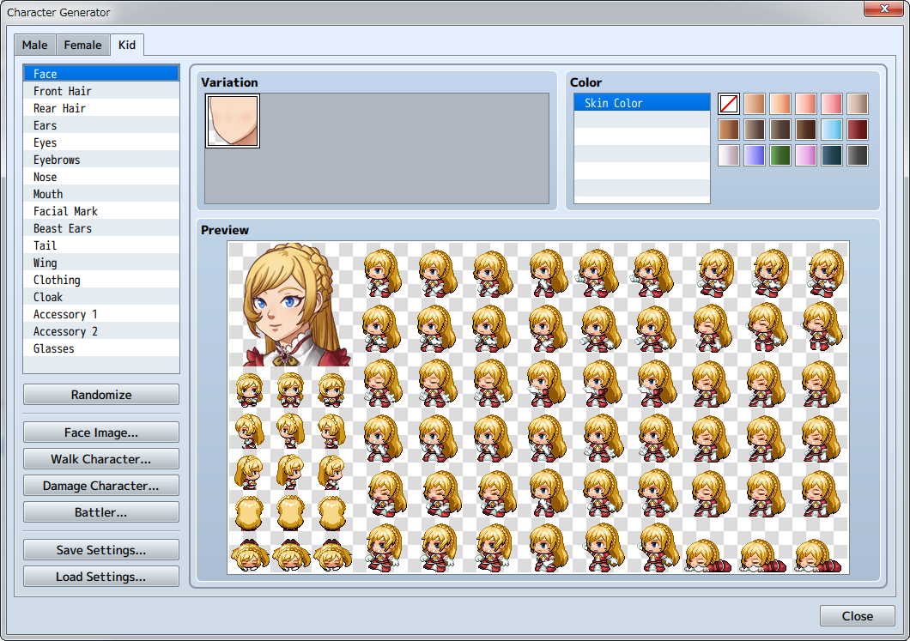
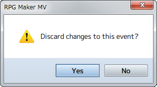

更新历史
2017 年 6 月 8 日更新
- Added “Edit as Text” option to the Plugin Manager context menu.
-
・［RPG Maker MV］→［How to Use Aid Tools］
- Added several search options for all context menus: “Search”, “Search Next”, and “Search Previous”.
-
・［RPG Maker MV］→［Basic Editor Controls］
- Added the “Community_Basic” plugin.
-
・Documentation［Using Official Plugins］
2017 年 3 月 21 日更新
- It is now possible to use RPG Maker MV Tools in conjunction with RPG Maker MV.
-
・［RPG Maker MV］→［The Menu Bar］
・［RPG Maker MV］→［How to Use Aid Tools］
- Added tutorials (beta).
-
・［RPG Maker MV］→［The Menu Bar］
・［RPG Maker MV］→［How to Use Aid Tools］
- RPG Maker MV is now available for Linux.
-
・［RPG Maker MV］→［About RPG Maker MV］→［System Requirements］
・Documentation［Deployment］
・Documentation［RPG Maker MV for Linux］
・Documentation［RPG Maker MV for Linux］→［Graphics Driver Installation］
・Documentation［RPG Maker MV for Linux］→［Running Games］
2016 年 11 月 24 日更新
- Added an option to generate child characters in the Character Generator.
-
・［How to use Aid Tools］→［Character Generator］

2016 年 8 月 4 日更新
- You now have the option to use encryption for deployment.
-
・Documentation［Output Formats］
- Added an Object Selector option.
- ［How to Use Aid Tools］→［Options］
- Added options to “Copy as Text” and “Copy as HTML tags” to the context menu of the Contents section on the Event Page.
- Events ［Map Event Settings］→［Editing Contents］→［Controls via the Context Menu］
2016 年 4 月 21 日更新
- You can now handle files in batches with the Resource Manager tool.
A [DLC] button has been added to the Resource Manager. (For Steam versions only)
- [How to Use Aid Tools]→[Resource Manager]
- Added a counterclockwise rotation function to the event command [Rotate Picture].
- ・Event Commands[Picture]→[Rotate Picture]
- Added [Options] to [Tools].
- [How to Use Aid Tools]→[Options]
- Added an editor DPI scaling function to the Windows version.
- The UI display in the editor is automatically adjusted when you change the DPI settings in Windows.
- Added a scroll wheel zoom in/zoom out function for the map.
-
(For Windows users) Ctrl + Scroll Wheel
(For Mac users) Command + Scroll Wheel
- Added [Refresh] to the Plugin Manager.
- Documentation →[Enabling Plugins]→[Refreshing Plugins]
- Fixed a bug in the looping for part of the music data.
- The [Passage] indicator for Tileset [B] on the upper-left of the tile has been fixed to ☆.
- Added and updated plugins.
2016 年 3 月 1 日更新
- 合成方式新增正片叠底。
-
・数据库
[动画设置]
・事件指令
[移动]→[设置移动路线]
[图片]→[显示图片][移动图片]
- 现在可以通过右键菜单打开插件帮助界面。
-
・数据库
[角色设置][职业设置][技能设置][物品设置][武器/防具设置]
[敌人设置][状态设置][图块组设置]
・事件指令
[信息]→[显示文字][显示滚动文字]
[流程控制]→[条件分歧][注释]
[高级]→[脚本][插件命令]
- 当变更角色职业时，你可以选择保留职业变更前的等级。
-
事件指令[角色]→[更改职业]
- 你可以通过右键菜单查看图标列表。
-
・事件指令
[信息]→[显示文字][显示滚动文字]
[高级]→[脚本][插件命令]
・[如何使用辅助工具]→[插件管理器]
- 新增素材管理器。
-
・[如何使用辅助工具]→[素材管理器]
- 发布平台中新增 [Web Browsers（网页浏览器）]。
打包界面新增 [Exclude unused files（不包含未使用文件）] 选项。
-
・资料集 [输出格式]
- 新增 触屏UI、扭蛋、老虎机插件。
-
・资料集
[使用官方插件]→[TouchUI]
[使用官方插件]→[Gacha / GachaBook]
[使用官方插件]→[SlotMachine]
- Set the multiplying factor.
- 动画设置中新增洋葱皮功能。
- 在控制帧预览界面可以同时显示多个帧的内容。
- 退出编辑时弹出提示对话框。
- 当你在编辑 事件/数据库/插件管理器 的内容时，点击取消键或者关闭按钮时会弹出提示对话框。

※ 若选择了 [Yes（确定）], 窗口将关闭，未保存的内容将丢失。
- 支持 Home/End 键。
- 当你在编辑事件页时，你可以使用键盘上的 Home/End 键来快速跳转到事件的 开头/末尾 。
- 压缩音频文件和图像文件的体积。
- 纸娃娃生成器中增加更多部件。